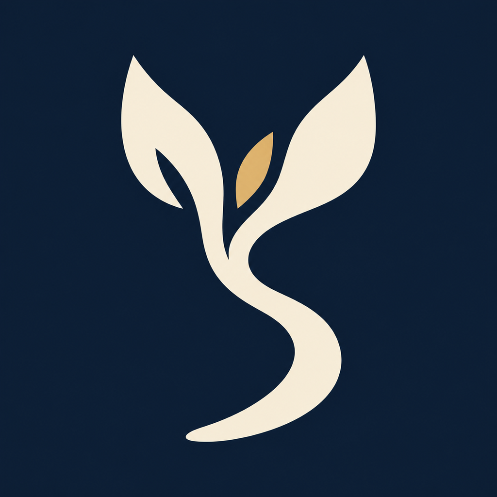
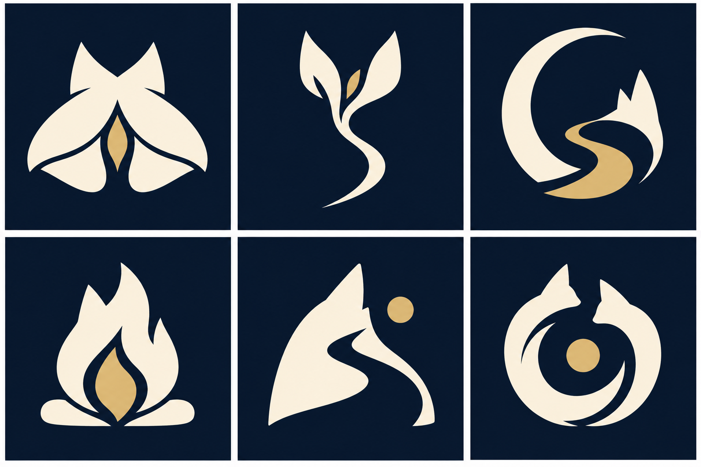

QUESTNOTE / PRIMARY BRAND MARK
同行星芽
傾聽的雙耳、向上的芽、延伸的路徑。陪伴與成長收進一個清楚輪廓。


固定深藍底、象牙白主形與單一金色種子。
App Icon 不隨三套內部風格切換。
六個概念方向

| 方向 | 符號與選擇原因 |
|---|---|
| 1 同行之光 | 雙耳包覆光點；有陪伴感，中心細縫在小尺寸較弱。 |
| 2 同行星芽 ✓ | 雙耳芽葉、種子與前行曲線；兼具陪伴、成長與旅程，輪廓最明確。 |
| 3 月徑 | 月環與路徑；旅程清楚，但更像月相工具。 |
| 4 歸途之火 | 雙耳火焰；營地情緒強，容易被讀成能源產品。 |
| 5 守望 | 耳形護符與向上路徑；守護清楚，但較嚴肅。 |
| 6 共行環 | 互相環抱的夥伴形；陪伴直觀，環形內部在小尺寸較擁擠。 |
小尺寸 / 淺色與深色背景
實際 PNG，以 CSS 32 / 48 / 64 / 96px 渲染；不將放大後的藝術完成度當成小圖辨識度。
9:41●●● ▰
iPhone 主畫面構圖示意。其他 App 使用中性示意圖示；這不是 iOS 實機截圖。